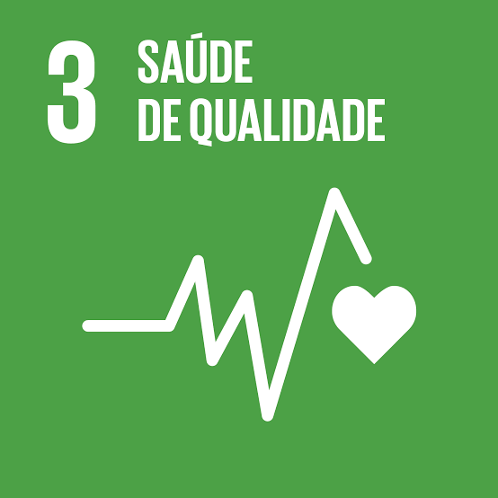
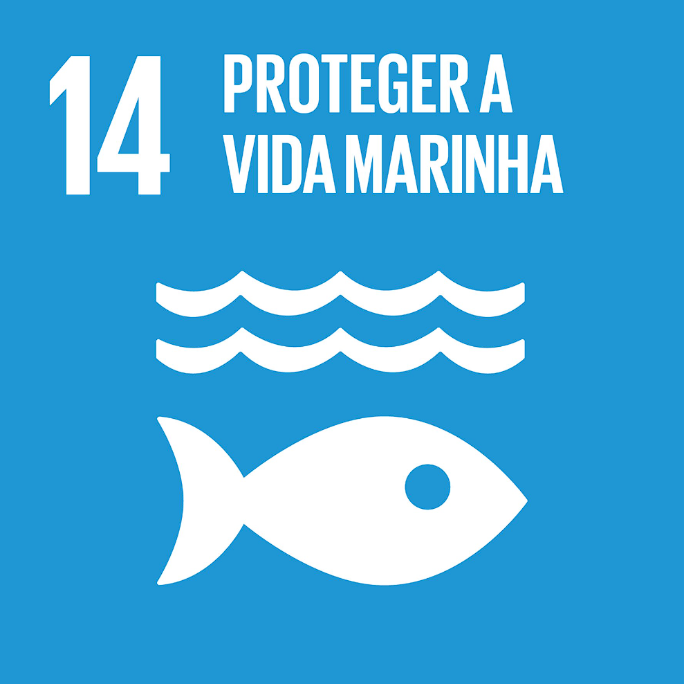
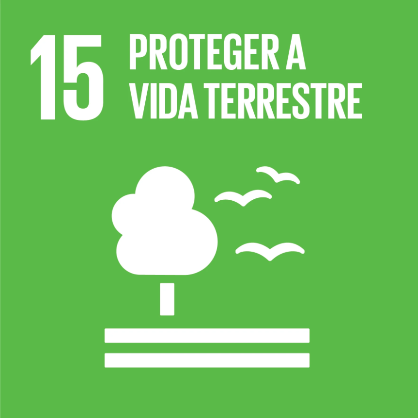

Sobre a História
Do Nosso Projeto
O Conviver é Proteger busca aproximar a comunidade da natureza, incentivando uma convivência mais segura, responsável e respeitosa com os animais.
Nosso projeto será um site educativo para ensinar as pessoas sobre o que fazer quando um animal aparecer em sua casa, mostrando como agir com segurança e como procurar ajuda. Também vamos falar sobre resgates de animais que acontecerem em Ribeirão Pires, contando um pouco sobre essas situações e sua importância.
Além disso, o site terá informações sobre feiras de adoção realizadas em nossa cidade, incentivando a adoção responsável e ajudando animais a encontrar um novo lar. Assim, nosso projeto busca informar e conscientizar a população sobre a proteção e o cuidado com os animais.


